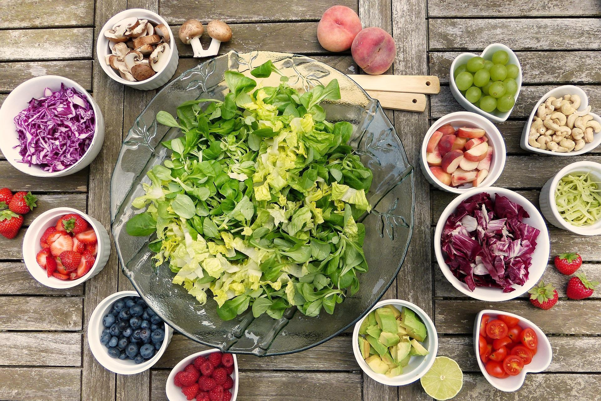

Salad

- Time: 40 mins
- Serves: 8
- Difficulty: Easy
Today I will be presenting you the recipe for Cornucopia Salad.
Cornucopia Salad is a great side dish that the whole family
will love.
Ingredients
- 1/4 cup sliced almonds
- 1 tablespoon white sugar
- 1 head red leaf lettuce, torn
- 3 green onions, chopped
- 1 Granny Smith apple, cored and chopped
- 1 avocado - peeled, pitted, and chopped
- 1/2 cup dried cranberries
- 1/4 cup crumbled blue cheese
Directions
- Place almonds and 1 tablespoon of suger in skillet on medium heat.
Stir until sugar melts and almonds are brown. Remove and let cool.
- Mix lettuce, onions, apple, avocado, cranberries, and blue cheese in a bowl.
- Whisk it all together with vinegar, 2 teaspoons of sugar
and 1 teaspoon of salt. Vegetable oil is optional.
ENJOY!